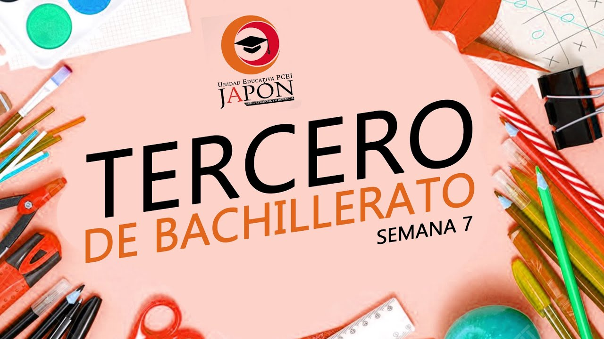

En tercero de bachillerato, los temas cubiertos dependen del país o región, pero generalmente abarcan materias clave como:
- Matemáticas: Álgebra y funciones (ecuaciones, desigualdades, sistemas, funciones lineales, cuadráticas, exponenciales y logarítmicas), geometría analítica y del espacio, trigonometría, estadística y probabilidad, e introducción al cálculo (límites, derivadas).
- Lengua y Literatura: Continuación del estudio de la literatura, análisis textual, gramática, y comunicación oral y escrita.
- Ciencias: Física, Química y Biología con temas avanzados de cada área.
- Historia: Evolución de las sociedades, movimientos sociales, revoluciones y estudio de distintas culturas.
- Lengua Extranjera: Refuerzo del idioma (como inglés), con enfoque en lectura, escritura y expresión oral.
- Ciencias Sociales: Economía, sociología, política y estudios de la sociedad actual.
- Artes: Continuación en música, danza, teatro o artes visuales.
- Educación Física: Mejora del rendimiento físico, deportes y salud.
- Cívica y Ética: Reflexión sobre valores, ciudadanía y convivencia responsable.
